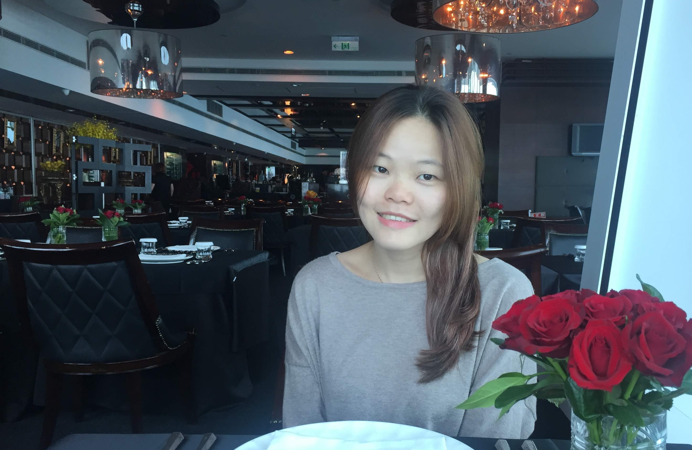

Hsiao-Tzu Hung (Anna Hung) 洪筱慈
She is currently a master student at NTU, Taiwan. Her main research interest is deep learning on multimedia, espically on audios and images.
Download CV
Education
2020 - present
Department of CSIE, National Taiwan University, Taiwan
2010 - 2014
Department of Physics, National Tsing Hua University, Taiwan
Work Experience
2019 - 2020
Full-time Machine Learning Research Internship
Taiwan AI LAbs, Taiwan
2018 - 2019
Research Assistant
Institute of Information Science, Academia Sinica, Taiwan
2017 - 2018
Physics teacher
National Lan-Yang Girls’ Senior High School
2015 - 2016
Physics teacher
National Chu-Pei Senior High School
2014 - 2015
Practice Physics Teacher
National Chu-Pei Senior High School
Projects
Jazz Melody automatic Generation
[Paper]
[Demo]